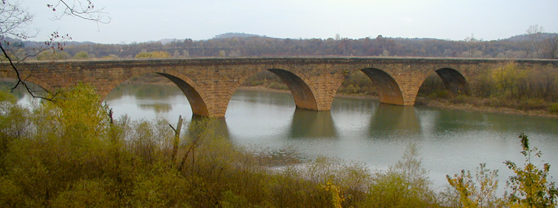

|
West Penn Trail |
one moment while we fetch a trail picture
|
|
|
West Penn Trail |
one moment while we fetch a trail picture
|
Vicinity Saltsburg: Directions begin just after crossing the bridge into Saltsburg. To get there from Pittsburgh, go east on US22 from the PA Turnpike and take the PA286 exit. Go 6.3 miles and continue straight on US PA380 East. Go 11.9 miles and continue straight on PA286 East (Yes, back on PA286). Go 1.7 miles and at the “Y” intersection bear right to stay on PA286. Go 0.2 miles and, at the bottom of the hill, turn left/east following PA286 across the bridge.
Saltsburg trailhead on Salt St: After crossing the bridge into Saltsburg, go two blocks to Salt St and turn left/north. Go 0.2 miles to the trailhead in North Park on the left.
Saltsburg trailhead near bridge: After crossing the bridge into Saltsburg, immediately turn right/south and park on the river side of the road.
Saltsburg (western) trailhead Canal St: After crossing the bridge into Saltsburg, immediately turn right/south on Water St. Go 6 or 8 blocks to the end, (depending how you count alleys), enter the parking lot behind the playground.This parking lot is also a trailhead for the Westmoreland Trail (page NE-253).
Vicinity Tunnelton: Directions begin just after crossing the bridge in Tunnelton. To get there from Pittsburgh, head east on US22 from the PA Turnpike. Go about 18 miles and turn left/north on PA981. Go 3.3 miles and turn right/east on Pump Station Rd. Go 0.2 miles and turn left/north to stay on Pump Station Rd. Go 1.0 miles and turn left/north to stay on Pump Station Rd. At 0.9 miles go slight right on Tunnelton Rd and cross the bridge.

Stone arch bridge across Conemaugh River Lake
Tunnelton Rd trailhead: After crossing the bridge into Tunnelton, go 1.6 miles to the trailhead parking lot on the left. The trail towards Saltsburg leaves the back side of the parking lot, the trail towards Conemaugh Dam is across the road.
Auen Rd trailhead: After crossing the bridge into Tunnelton, go 0.9 miles and turn right/east on Auen Rd. Go 1.1 miles to the trail crossing and parking on the left.
Conemaugh Dam Recreation Area trailhead: After crossing the bridge into Tunnelton, go 0.9 miles and turn right/east on Auen Rd. Go 0.7 miles to the entrance of the Conemaugh Dam Recreation area. Find a parking lot. The trail towards Saltsburg is to the left and loops around behind the visitor center. The trail towards Blairsville leaves the far end of the parking lots and heads down the hill.
Vicinity Eastern trailheads: Directions begin headed east on US22 from the PA Turnpike. To get there from Pittsburgh, go east on US22.
Livermore trailhead: From the PA Turnpike go 21.7 miles and turn left/north on Boone Rd. Go 0.3 miles to a “T” and turn right/east on Number 10 Rd. Go 1.8 miles to a “T” and turn left/northwest on Livermore Rd. Go about 1.4 miles to a gate and trailhead parking. The trail is farther down the road.
Westinghouse Rd trailhead: The trailhead at the end of Westinghouse Rd is now closed.
Newport Rd (eastern) trailhead: From the PA Turnpike go 26.8 miles and take the PA217 exit to Blairsville. At the end of the ramp, turn right/west on W Ransom Way. Go 3 blocks to the “T” with PA217 and turn right/northwest. Go 0.7 miles and turn left/northwest on Newport Rd. Go 0.7 miles, and shortly after Airport Rd crosses a bridge take the next left/west on to a small driveway with a WPT sign. Proceed down this driveway an unusually long distance to parking.